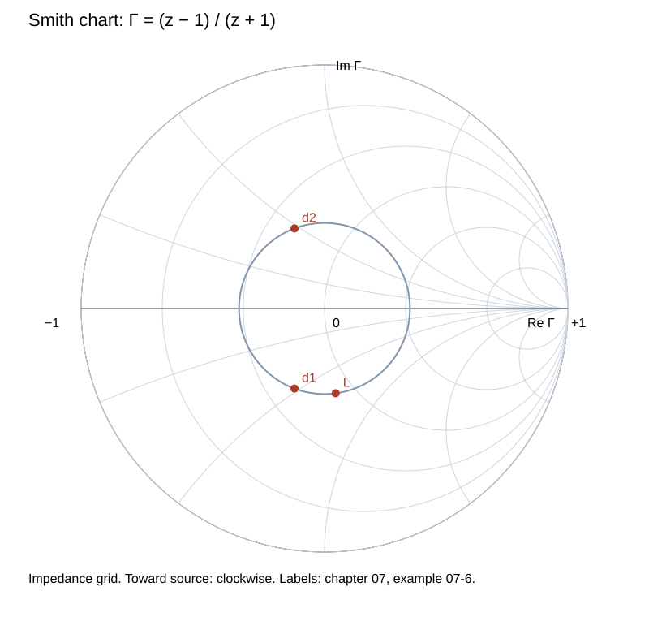

第 07 章 阻抗匹配与调谐
目录 · 解析
07.1 目标、先修与匹配对象
本章要把负载经过一段网络变成指定参考阻抗，掌握 Smith 图、四分之一波长变换和单支节两组周期解，并能从源、负载两侧验证匹配。先修为第 03 章的阻抗变换与第 06 章的参考面。
对实参考线，输入无反射要求 Zin=Z0。对含复内阻的戴维南源，最大可用功率传输要求源看到 Zin=Zg∗；这是共轭匹配。只有 Zg=Z0 为实数时，两种要求在同一面重合。匹配网络通常在指定频率设计，频率变化后电长度、电抗都会变。
例 07-1（原创，区别条件） 50 Ω 源连接一个把负载变为 50 Ω 的无耗网络，可实现源侧无反射。若源改为 50+j20Ω，最大功率要求网络输入为 50−j20Ω，不能继续仅因输入 50 Ω 就叫共轭匹配。
07.2 Smith 图是复数变换的几何图
归一化阻抗 z=Z/Z0=r+jx，归一化导纳 y=Y/Y0=Z0Y=1/z=g+jb，其中 Y0=1/Z0。r、x、g、b 均无量纲；真实导纳为 y/Z0，不是 yZ0。
反射系数映射为 Γ=(z−1)/(z+1)。设 Γ=u+jv，将 z=(1+Γ)/(1−Γ) 的实虚部分别整理，可得
(u−r+1r)2+v2=(r+1)21,
(u−1)2+(v−x1)2=x21(x=0).
所以等电阻是圆，等电抗是圆弧。图的中心 Γ=0 对应 z=1；最左 Γ=−1 为短路，最右 Γ=+1 为开路；上半图是正电抗，下半图是负电抗。无耗线移动保持 ∣Γ∣ 不变，在以原点为圆心的等驻波比圆上旋转。

图中实轴与虚轴是反射系数轴，无单位。网格由上述解析式生成，原始负载 L 在下半面；d₁、d₂是向源移动后的两处主线阻抗点。图只辅助读法，精确数值用代数复算。
用阻抗网格读导纳时，将当前点绕中心转 180° 后读同一套网格，因为 Γ(1/z)=−Γ(z)。这是换用读数网格，并非电路里真的插入一段四分之一波长线。若使用自带导纳网格的阻抗/导纳双图，可直接在同一个物理点读导纳，不再重复旋转。
例 07-2（原创，归一化与倒数） 50 Ω 系统 Z=100+j50Ω，z=2+j；y=(2−j)/5=0.4−j0.2，真实 Y=0.008−j0.004 S。Γ=(1+j)/(3+j)=0.4+j0.2。若从图上只读出“0.4”，须说明它是 g 还是 Γ 的实部，这两个数在一般题目中不会恰好相同。
例 07-3（原创，向源旋转） 负载 ΓL=0.5∠60∘，向源走 λ/12，相位减少 720∘/12=60∘，得到 Γ=0.5，z=3。向源走 λ/4 时相位减 180°，得到 0.5∠(−120∘)；不能按单程电压相位只转 90°。
07.3 四分之一波长变换器
在实电阻 RL>0 与主线 Z0>0 之间插入无耗线，特性阻抗为 Zt，设计频率电长度为 π/2。第 03 章给出输入 Zt2/RL；令其等于 Z₀，得到
Zt=Z0RL,lt=λt/4.
长度用变换段本身的导波波长。若负载有虚部，Zt=Z0ZL 一般为复数，不能直接解释为一条普通无耗线的实特性阻抗；需先移动参考面或用电抗调谐使负载在该处成为实数。
例 07-4（原创） 50 Ω 主线匹配 100 Ω，Zt=5000=70.7107Ω。若变换段速度 2×108 m/s、设计 1 GHz，长度为 50 mm。设计频率下输入 50 Ω。
例 07-5（原创，频率变化） 同一长度改在 0.5 GHz 工作，电长度成为 π/4。代一般变换公式，
Zin=70.710770.7107+j100100+j70.7107=66.6667−j23.5702Ω.
相对 50 Ω，∣Γin∣=0.242536，VSWR≈1.640388，匹配已经偏离。频率升到使这段线成为 3λ/4 时，理想无色散模型再次发生奇数四分之一波长变换；实际宽带设计仍需考虑参数频散、损耗和带内指标。
07.4 并联单支节：先令电导为 1
主线从负载向源走距离 d，在这一处并联一段短路或开路支节。支节末端无电阻，理想支节仅提供虚导纳，不能改变主线导纳的实部。因此第一步必须选 d 使主线归一化导纳 y(d)=1+jb，第二步令支节 ys=−jb，总导纳才是 1。
源/50 Ω ──●──── 主线长度 d ─── ZL
│
│ 支节长度 ls
│
开路或短路
相同特性阻抗的短路支节 zs=jtanβls，故 ys=−jcotβls；开路支节 zs=−jcotβls，故 ys=jtanβls。若支节阻抗 Zs=Z0，归一化到主线后还需乘 Z0/Zs。
代数求 d：令 zL=r+jx、t=tanβd，
y(d)=zL+jt1+jzLt,Rey(d)=r2+(x+t)2r(1+t2).
置实部为 1，得到二次方程
(r−1)t2−2xt+(r−r2−x2)=0.
求出 t 后，βd=arctant 只给一个主值；应加整数倍 π，使 0≤d<λ/2。二次方程最高次系数为零时改解一次方程，并检查是否有 t→∞ 的四分之一波长解。已匹配负载可直接不用支节，不必制造无意义的“最短非零”线路。
例 07-6（旧 A 卷第 4 题，完整求解） ZL=42.5−j33.75Ω,Z0=50Ω,λg=100 mm。归一化 r=0.85,x=−0.675，方程化为
0.15t2−1.35t+0.328125=0.
判别式为 1.625625=1.2752，两根为 t=0.25、8.75。
第一组：βd=arctan0.25，d=3.8989565 mm。要 ys=−j0.75，需 cotβls=0.75，选 0<βls<π 中的 βls=arctan(4/3)，得到 ls=14.7583618 mm。第二组 d=23.1889440 mm、ls=35.2416382 mm。各长度可加独立整数倍 λ/2 构成等价解；本题第一组的 d 和支节长度都较短。一般题目必须成对比较，不能取一个解的 d 和另一个解的支节长度。
例 07-7（原创，改成开路支节） 保持例 07-6 的第一处 d，仍需 ys=−j0.75。开路支节要求 tanβls=−0.75，最短正角为 π−arctan0.75，所以 ls/λ=0.397583618，长度 39.7583618 mm。若用第二处 d，需 +j0.75，开路支节最短长度为 10.2416382 mm。可见“更短 d”和“更短支节”未必属于同一解，需结合布局选方案。
07.5 从负载侧检查共轭匹配
匹配计算完成后应从实际电路复算一次，避免图上方向读反。旧卷还要求把独立电压源置零，向源看匹配网络的等效阻抗是否为 ZL∗。
例 07-8（旧 A 卷第 4 题第 2 问） 采用例 07-6 第一组。短路支节输入为 Zs=j50/0.75=j66.6667Ω。源置零后，主线左端看到 50 Ω 与支节并联：
ZA=(501+j66.66671)−1=32+j24Ω.
再从负载处通过同一段 d 看向这个终端，t=0.25，
Zseen,L=5050+jZAtZA+j50t=42.5+j33.75Ω=ZL∗.
这里反向看的线段仍按“输入端向终端”的普通变换公式计算，终端换成 ZA；不要把负载坐标符号未经辨认地混进去。这一直接复算比简单宣布“无耗所以必然共轭”更可审计。
07.6 集总 L 型匹配与带宽认识
当元件在频率范围内可视为集总且有足够高的品质因数，可用一个串联电抗和一个并联电纳匹配实阻抗。对于 RL>R0，在负载处并联电纳 B，再串联 X。令并联后的阻抗实部为 R₀：
Zp=1/RL+jB1=1+(BRL)2RL−j1+(BRL)2BRL2.
得 Qm=RL/R0−1，B=±Qm/RL，串联补偿 X=±R0Qm，B 与 X 同号。这里 Qm 是匹配电抗比，不等同于第 08 章某个实际谐振器的无载 Q。
例 07-9（原创，低通式） 50 Ω 匹配 100 Ω，Qm=1。取 B=+0.01 S（并联电容）、X=+50 Ω（串联电感）；1 GHz 下 C=B/ω=1.59155 pF、L=X/ω=7.95775 nH。负载并联电容后为 50−j50Ω，再加 j50 Ω 得 50 Ω。
例 07-10（原创，高通式变化） 同目标取 B=−0.01 S（并联电感）、X=−50 Ω（串联电容）。1 GHz 下并联电感 L=1/(ω∣B∣)=15.9155 nH，串联电容 C=1/(ω∣X∣)=3.18310 pF。两方案都在该频率匹配，但离开设计频率的行为不同；元件寄生也会改变结果。
本章下面把读图、反向验证和条件改变展开，再用双支节和两节变换器说明匹配的可实现性与带宽。这些是正式课程“匹配与调谐”的知识补全，具体本届考试深度仍待后续通知；指定 Pozar 第4版正文对照未完成。
07.6A 真正操作一次 Smith 图
1. 图上哪一个点代表电路
一张阻抗 Smith 图的坐标始终是 Γ=u+jv，网格标的是 r,x。先在相交的等 r 圆、等 x 弧上标负载点 L；从圆心连接 L，半径就是 ∣ΓL∣。纸图的精度通常只支持约两三位有效数字，不能把软件算出的九位小数说成手工读图精度。
并联支节要读导纳。有两种自洽做法：在阻抗/导纳双网格上保持物理点 L 不动，读 g,b；或者只用阻抗网格，把点转半圈形成辅助点 Ly=−ΓL，把同一套标号解释成 g,b。第二种辅助坐标记作 q=−Γ，不能再把它当物理反射系数。特别是图上最右端：在阻抗模式表示开路，在导纳辅助模式表示导纳无穷，即物理短路。

图左用物理 Γ 标 L、A₁、A₂；图中用辅助 q 标 Ly,A1y,A2y 并画 g=1 圆；图右只读短路支节。从右端辅助短路点 S 出发，顺时针走到所需 b 点，得到支节长度。三幅图上顺时针均表示沿对应线向输入端走，但左、中两幅的标点不是同一个坐标值。
2. 把旋转角变成长度
由 Γ(d)=ΓLe−j2βd，向源走 d 的角度是 −4πd/λg。因此走完一圈等于 λg/2。若角度以度计，
λgd=720∘顺时针角度.
有“wavelengths toward generator”外圈刻度时，用终点读数减起点读数；负值补 0.5。刻度原点可以选在不同位置，差值必须一致。向负载移动则反向。图上取倒数转半圈只是换读数；实际沿主线走半圈才对应四分之一波长，二者不可混为一个动作。
例 07-11（原创读图演示，沿用原题负载作坐标） zL=0.85−j0.675，有
yL=0.721485+j0.572944,ΓL=0.0459307−j0.348106=0.351123∠(−82.48356∘).
在导纳辅助图以半径 0.351123 顺时针移动，分别与 g=1 圆交于 1+j0.75 和 1−j0.75。物理 Γ 点分别为 −0.123288−j0.328767、−0.123288+j0.328767。第一处相角为 −110.55605°，顺时针差为 28.07249°，所以 d1/λg=0.0389896。第二处不能用 +110.55605°直接相减，应连续写成 −249.44395°；差为 166.96040°，故 d2/λg=0.2318894。
第一处需要 bs=−0.75。在支节辅助图，短路 S 的 q=+1；顺时针走 106.26020°到标有 b=−0.75 的圆周点，因此 l1/λg=106.26020/720=0.1475836。第二处需要 bs=+0.75，顺时针角为 253.73980°，得到 0.3524164。最后按07.4的代数式复算两对，纸图负责选路径与估读，代数负责精确结果。
3. 三项操作自检
负载点是否位于阻抗图下半面（本例容性）？旋转半径是否保持不变（主线无耗）？并联支节后是否沿等电导圆到中心，而非沿等电阻圆？若主线有损，向源移动时反射幅度衰减，轨迹为螺旋，不能画无耗等驻波比圆。
07.6B 改条件时重新选方程
例 07-12（原创，支节为75 Ω） 主线和负载仍取例07-6，支节改成75 Ω，且主线、支节的导波波长均为100 mm。第一步 d 不变，因为它只由主线负载决定。第二步必须用
ys=−j7550cotθs.
第一组要求 cotθs=0.75×75/50=1.125，所以 ls=11.564872 mm；第二组为38.435128 mm。代回两组都使主线总导纳为1。若支节的介质另使 λs=80 mm，保持这两个电长度，对应物理长度变成9.251898与30.748102 mm；不能继续乘主线100 mm。
例 07-13（原创，二次项消失） zL=1+j，代07.4方程得 −2t−1=0，有限根 t=−1/2，在 0≤d<λ/2 中选 d/λ=0.4262082。此处 y=1−j，需要支节 +j，故 ls/λ=3/8。但还存在被 t=tanβd 参数化漏掉的 βd=π/2：四分之一波长处 y(d)=zL=1+j，需支节 −j，故 ls/λ=1/8。两处都匹配，必须代回电纳判断符号。正确配对为：
此例说明一次方程并不一定意味着仅有一组物理解。实际验证用正弦/余弦形式处理四分之一波长，避免计算机 tan 的大数溢出。
例 07-14（原创，改成串联支节） 50 Ω主线终接 100+j50Ω，在距负载 d 处串入短路支节。串联只能改变阻抗虚部，故要先使 Rez(d)=1。从
z(d)=1+jzLtzL+jt,Rez(d)=(1−xt)2+r2t2r(1+t2)
得到 (r2+x2−r)t2−2xt+(1−r)=0。本例 r=2、x=1，方程 3t2−2t−1=0，根为1、−1/3。第一组 d/λ=1/8，z(d)=1−j，串入 zs=+j，短路支节 ls/λ=1/8。第二组 d/λ=0.4487918，z(d)=1+j，需 zs=−j，取 ls/λ=3/8。串联式不能沿 g=1 圆设计；实际平面结构实现串联支节也需明确回流路径，不能把并联支节图直接改一个标签。
07.6C 反向共轭：不仅验证一组数字
在一个固定频率下，由无耗互易传输线和纯电抗构成的普通二端口，其ABCD可写成
[AjCrjBrD],A,Br,Cr,D均实,AD+BrCr=1.
这里 Br 单位Ω，Cr单位S。该形式由第06章无耗线、串电抗、并电纳的矩阵及其级联直接验证，限制于这种网络，不能无条件套到有源或非互易器件。
若从源侧看已实现实源电阻 Rg 的匹配，
jCrZL+DAZL+jBr=Rg,
ZL(A−jRgCr)=RgD−jBr.
取复共轭，再整理：
ZL∗=A+jRgCrRgD+jBr.
把独立电压源置零后，源端留下 Rg；从负载侧反向看，同一网络的反向ABCD为 [D,jBr;jCr,A]，其输入正是右式，所以得到 Zseen,L=ZL∗。分母为零的理想奇异点应从极限处理；本题 ReZL>0，正常匹配解不涉及无穷负载。这个证明说明两组支节解都成立，不是第一组数值巧合。
例 07-15（原创，验证第二组并给反例） 原题第二组支节 ys=+j0.75。源置零后并联点归一化阻抗 zA=1/(1+j0.75)=0.64−j0.48；反向通过 t=8.75 的线，
zseen,L=1+j(0.64−j0.48)8.750.64−j0.48+j8.75=0.85+j0.675.
真实阻抗为 42.5+j33.75Ω。若把网络换成串联25 Ω电阻、负载25 Ω，源电阻50 Ω仍见50 Ω而无反射；反向看却是25+50=75 Ω，不等于负载25 Ω。损耗会使前述推理失效。另须分清“源置零”是求等效内阻的数学操作；它不声称关掉信号后仍在传递原先功率。
07.6D L型匹配的另一拓扑与双支节禁区
1. 小负载电阻不能硬套大电阻公式
当 RL<R0，可在负载前串联电抗 X，再在输入处并联电纳 B。写总导纳而不是照抄07.6：
Yin=RL+jX1+jB=RL2+X2RL+j(B−RL2+X2X).
令实部 1/R0、虚部0，得到
X=±RL(R0−RL),B=RLR0X.
例 07-16（原创，输入并联、负载串联） 1 GHz把25 Ω匹配至50 Ω。选 X=+25 Ω、B=+0.02 S，负载前串L=3.978874 nH，输入并C=3.183099 pF。串联后 Z=25+j25，倒数 Y=0.02−j0.02 S，再加 j0.02 S，输入恰为50 Ω。若负载本来有电抗，应把其电抗计入“所需总X”；最终元件可能改变种类，不应凭拓扑名字猜正负。
2. 两个连接点固定时能否一定匹配
规定第一支节与负载在同一面；若实际有负载引线，先变换到第一支节点。该面归一化导纳 g+jb，加第一支节后为 g+jB，其中 B=b+b1。向源经过固定间距 s，令 t=tanβs，第二支节前
y2=1+j(g+jB)tg+jB+jt,Rey2=(1−Bt)2+(gt)2g(1+t2).
第二支节只能改虚部，因此要 Rey2=1。展开并解平方得到
(1−Bt)2=g[1+t2−gt2],
B=t1∓g[1+t2(1−g)],b1=B−b,b2=−Imy2.
对 g>0、有限非零 t，实解要求
g≤t21+t2=csc2(βs).
这就是该指定布局的禁区条件。禁区首先是电导条件，不能笼统写成“负载电阻大就不能匹配”；电阻和电导之间还受负载电抗影响。s=λ/8 时要求 g≤2。s=λ/4 时直接取变换极限得 g≤1。s=nλ/2 时第二点只是重现第一点，不能调整实部；只有 g=1可匹配，不能把 t=0代入含1/t的式子。
例 07-17（原创，设计与不可实现变化） 第一节点 yL=0.5−j0.2，s=λ/8，t=1。B=1∓0.75。第一组 b1=0.3339746，第二点 y2=1+j0.7320508，故 b2=−0.7320508；第二组 b1=2.0660254、b2=+2.7320508。这些 b 都归一化到主线，按07.4选开/短支节角度即可。若换成 yL=3−j0.2，根号内 3(2−3)<0，此固定间距不能匹配；可以移动第一参考面、改变间距或增加调谐自由度，不能输出复数“支节长度”。
07.6E 两节变换器、精确带宽与加工误差
把 N 个电长度均为 θ 的线段串接，设计中心 θ=π/2。小反射近似忽略多次反射乘积，把每个界面的反射折算到输入，相加得
Γ(θ)≈n=0∑NΓne−j2nθ.
其中 Γn=(Zn+1−Zn)/(Zn+1+Zn)，Z0为源线、ZN+1=RL。若相邻阻抗接近，Γn≈21ln(Zn+1/Zn)。想在中心形成 N 阶零点，可选择系数使上式等于 A(1+e−j2θ)N。利用二项式展开，
lnZnZn+1≈2A(nN),A=2N+1ln(RL/Z0).
这给出二项式多节初始设计。它是近似综合；反射差较大时必须再用完整ABCD或逐段阻抗变换校验，不将近似零点阶数自动视作所有精确高阶设计的保证。各段电长度相同不意味着物理长度相同，速度不同则各取自己的 λ/4。
例 07-18（原创，两节与一节比较） 50 Ω匹配200 Ω，两节取 N=2，对数阻抗阶跃比1:2:1。得
Z1=5041/4=70.710678Ω,Z2=5043/4=141.421356Ω.
中心频率先从200 Ω经过Z₂的λ/4得到100 Ω，再经Z₁的λ/4得到50 Ω。两节确实匹配。固定各段长度、无色散、负载不变时，在 f/f0=0.8 或1.2，两节精确 ∣Γ∣=0.0714357；单节100 Ω变换器则为0.2257783。两节在这个比较区间降低反射，但增加面积与损耗机会。用“多一节总会在每个频率更好”代替带内计算没有依据。
例 07-19（原创，支节匹配的频率和加工变化） 原题两组支节在设计频率完全匹配。仅为比较网络自身频率敏感性，假设负载 42.5−j33.75Ω 在考察频带不变、各线无色散，则各电长度同时乘 ρ=f/f0。重新计算
ytot(ρ)=zL+jtan(ρβ0d)1+jzLtan(ρβ0d)−jcot(ρβ0ls).
第一组在ρ=0.9、1.1的反射模分别为0.0884031、0.0751982；第二组为0.1904053、0.2933388。这里短方案更宽带，但结果依赖负载频散与选择，不能由某一例断言所有匹配网络均如此。
还可先做一阶误差估计。若仅短路支节长度有误差 δls，其归一化电纳 bs=−cotθs，故
δbs≈csc2θsβδls,Γ≈−2jδbs.
第一组 cotθs=0.75，csc2θs=1.5625。λ=100 mm，若 δls=0.1 mm，则 ∣Γ∣≈1.5625(2π/100)(0.1)/2=0.004909。主线长度误差、介电常数误差或支节开口边缘效应需分别加入，不能用这一个数字代表所有加工误差。
07.7 练习与来源
以下均原创。解析。
07-1 75 Ω 系统负载 150−j75Ω，求归一化阻抗、导纳与反射系数。
07-2 50 Ω 主线匹配 200 Ω 实负载，求四分之一波长段阻抗。该段 ϵeff=4、f₀=2 GHz，求物理长度。
07-3 复算例 07-6 两组解，将主线导纳和短路支节导纳相加；若误把第二组短路支节与第一组 d 混用，求总导纳和输入反射。
07-4 某连接点主线归一化导纳为 1−j2，需并联同阻抗支节。分别求短路、开路支节在 (0,λ/2) 内的长度比例。
07-5 把 50 Ω 匹配到 125 Ω，选负载并联电容、前端串联电感，在 1 GHz 下求 L、C，并代回验证输入阻抗。
07-6 为什么一个解的最小 d 不能随意与另一解的最小支节长度组合？请用导纳的虚部解释，而非只说“公式规定”。
07-7（读图迁移） 物理负载反射为 0.4∠150∘。在阻抗图标点；向源移动0.2λ后求Γ与z；用导纳辅助图说明初、末辅助点角度，以及为什么不能把辅助点当物理反射。
07-8（条件变化） 例07-6第一组d不变，支节75 Ω、导波波长80 mm。求短路和开路支节最短正长度，并写总导纳验证式。
07-9（边界解） 对 zL=1−j2 做同阻抗并联短路支节匹配，找出 0≤d<λ/2 内所有解，包括tan参数化的遗漏点；给成对长度。
07-10（反向综合） 例07-14第一组串联支节，源电阻50 Ω。源置零后，从负载看入。先画出在远端串联的等效阻抗，再变换回负载面，验证共轭；说明有损反例为何不适用。
07-11（L型反求） 输入参考75 Ω，负载 30−j10Ω，f=2 GHz。采用输入并联电容、负载前串联电感，求两元件并复算。负载的−j10是否可以忽略？
07-12（双支节） 第一节点 y=1+j0.5，两支节间距λ/8，求两组归一化电纳。若电导改为2、3，分别有几组实解？电导恰为2时两根合并意味着什么？
07-13（宽带自主选择） 50 Ω匹配100 Ω，设计一节与两节四分之一波长变换器。在无色散、频率0.8f₀时逐段精确复算反射模；若指标是 ∣Γ∣<0.05，哪种在该频点满足？不能只引用“小反射”近似。
07-14（误差逆向） 例07-19仅第一组短路支节有长度误差。一阶估计要回波损耗至少30 dB，可允许的 ∣δls∣ 约多大？明确误差模型和小量假设。
07-15（方法判断） 负载为纯电抗，能否只靠有限、无耗、被动支节网络把输入变为正实50 Ω且向负载传送正平均功率？负载为有源负电阻时，07.4的几何与功率论证又有什么变化？
补充外部核对：Jim Stiles，Double Stub Tuning，2页用于确认固定间距双支节的两步设计与存在禁区；本节禁区判据由所写拓扑独立推导，不照搬讲义中含混的“电阻大”表述。本章未完成指定Pozar第4版正文对照。
本班范围依据简介第 2 页，四分之一波长理论依据第二章第 19–23 页。支节参考原作者 Jim Stiles，Single-Stub Tuning，PDF 第 2–10 页。旧卷见第 4 题及 Fig.2，已以原图核对并联支节拓扑。图形与数值推导均自行生成。
扩展阅读与训练：多节等波纹、渐变线与匹配极限，含独立推导、算例、条件变式及解析。